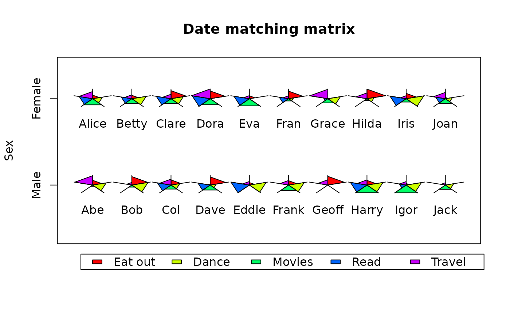

A pie-like graphic object
starPie.RdDisplay a polygon with each sector proportional to a vector of numeric values.
Usage
starPie(x,y,radext,values,maxval=NA,border=par("fg"),col=NA,prop.area=FALSE,
label="",labelpos=1)Arguments
- x,y
The coordinate position for the center of the starPie.
- radext
The maximum distance from the center of the starPie to one vertex of the polygon.
- values
A vector of numeric values.
- maxval
A maximum value for scaling the values to the radius. If NA, the maximum value in values will be used.
- border
The color to use for the borders of the polygon sectors.
- col
The color(s) to use for the fills of the polygon.
- prop.area
Whether to scale the values to the area (TRUE) or the radial extent (FALSE) of the polygon sectors.
- label
Optional text labels for the starPies.
- labelpos
Positions of the labels relative to the starPies.
Details
starPie displays a polygon centered on the x,y position having sectors of equal angular extent. The radial extent of each sector is proportional to the values in the numeric vector lengths. If the prop.area argument is TRUE, the proportion is based on the area of the sector, and if prop.area is FALSE, the proportion is on the radial extent. As the function is intended to exaggerate the differences between different starPies, the default produces sectors proportional to the squares of the lengths.
starPie is intended to display a visual analog of the relative value of matched attributes of a number of similar objects or groups. Thus objects having similar attributes will produce similar looking starPies. When constructing such a matrix, it is necessary for maxval to be specified, usually as the overall maximum value in any of the attribute value vectors. If maxval is not specified in such a situation, only the relative values within each vector will determine the radial extents of each starPie. There appears to be no reason to have different sector colors for different objects, but the user can display more than one set of starPies on a plot with different sector colors if necessary.
starPie calls getYmult to automatically adjust for both the aspect and coordinate ratio of the plot.
Examples
date_mat<-data.frame(sex=rep(c("M","F"),each=10),
names=c("Abe","Bob","Col","Dave","Eddie","Frank","Geoff","Harry","Igor","Jack",
"Alice","Betty","Clare","Dora","Eva","Fran","Grace","Hilda","Iris","Joan"),
eating=sample(0:100,20),dancing=sample(0:100,20),movies=sample(0:100,20),
reading=sample(0:100,20),travel=sample(0:100,20))
plot(0,xlim=c(0.5,10.5),ylim=c(0,3),type="n",axes=FALSE,xlab="",ylab="Sex",
main="Date matching matrix")
par(xpd=TRUE)
legend(0.7,-0.3,c("Eat out","Dance","Movies","Read","Travel"),fill=rainbow(5),
ncol=5)
par(xpd=FALSE)
box()
axis(2,at=c(0.9,2.4),labels=c("Male","Female"))
starPie(x=rep(1:10,2),y=rep(c(0.9,2.4),each=10),radext=0.5,
values=as.matrix(date_mat[,3:7]),label=as.character(date_mat[["names"]]))
